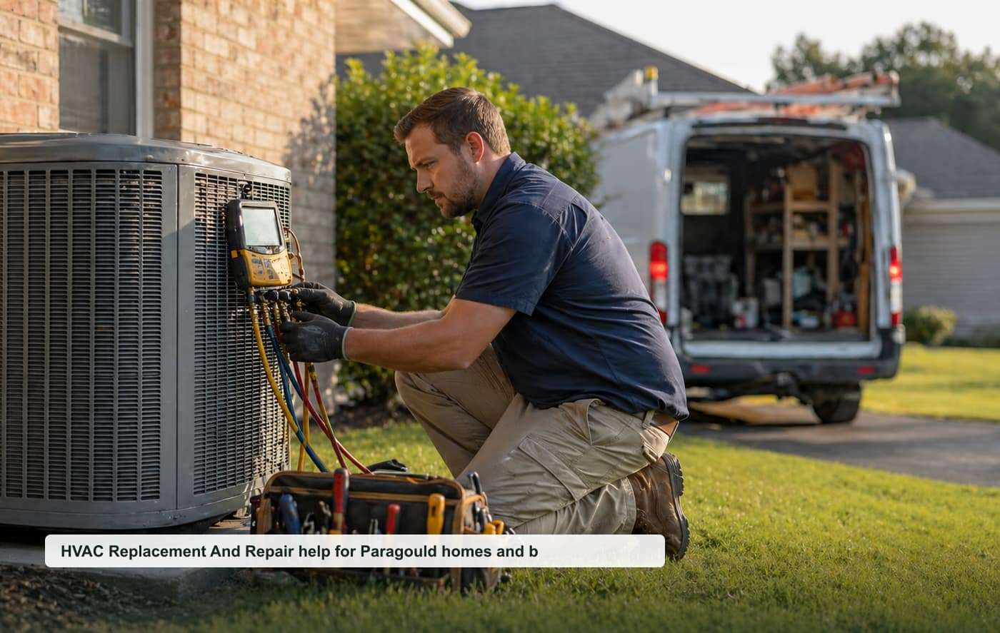

AC Repair
No cooling, weak airflow, thermostat issues, coils, and urgent summer calls.
View pageHVAC repair Paragould AR
A focused local quote request website for Paragould, Greene County, and nearby communities.

Opportunity thesis
HVAC has urgent seasonal demand and high-ticket replacement jobs; a focused city site can segment repair, replacement, and maintenance leads.
The site is built around specific high-intent pages instead of one generic homepage. That makes it easier to test rankings, route leads by job type, and pitch a local business with clear ROI.
Service cluster
No cooling, weak airflow, thermostat issues, coils, and urgent summer calls.
View pageHigh-ticket system replacement, heat pumps, split systems, and estimates.
View pageHeating failures, ignition, airflow, and winter emergency calls.
View pageHeat pump repair, replacement, maintenance, and efficiency issues.
View pageDuct repair, airflow balancing, leakage, and comfort issues.
View pageTuneups, seasonal checks, filters, and service plans.
View pageBuyer-intent pages
Homeowner-focused HVAC replacement and repair quote requests for inspections, repairs, replacements, and planned projects in Paragould.
View pageSmall business, property manager, and light commercial HVAC replacement and repair requests around Paragould and Greene County.
View pageUrgent HVAC replacement and repair requests where response time, safety, access, and callback speed matter.
View pageLocal search page for nearby HVAC replacement and repair requests in Paragould, Greene County, and surrounding communities.
View pageThese pages support nearby searches without claiming fake office locations.
Repeatable model
Start with tracked calls/forms, validate ranking movement, then offer a trial to the best local provider. Keep the lead flow exclusive once paid.
Planning guides
Planning guide for Paragould HVAC replacement and repair quote requests.
View pagePlanning guide for Paragould HVAC replacement and repair quote requests.
View pagePlanning guide for Paragould HVAC replacement and repair quote requests.
View pageLocal questions
Cost depends on project size, urgency, access, materials, labor, and the final scope confirmed by the provider.
Response depends on provider availability, weather, job type, and whether the request is emergency or planned work.
Nearby requests may be routed for Marmaduke, Brookland, Lafe and surrounding Greene County communities.
Include your city, project type, rough size, visible symptoms, timeline, and the best callback number.
Request a local quote
Include the project type, rough size, city, urgency, and best callback number.